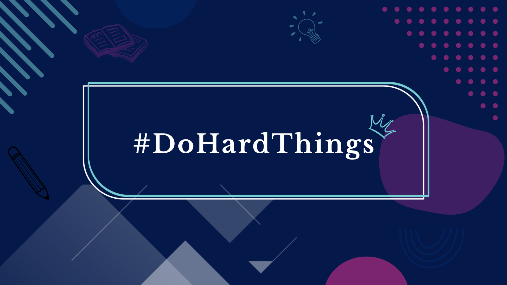
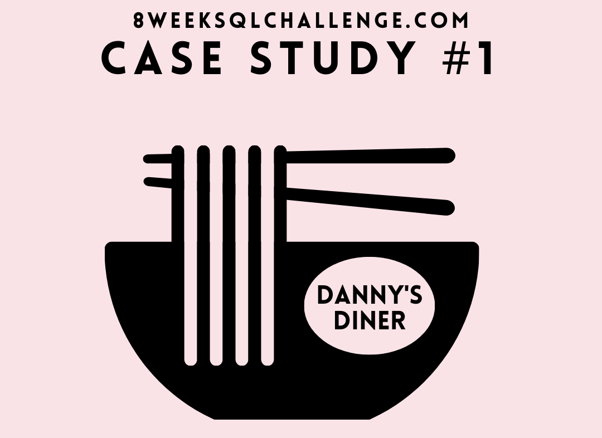
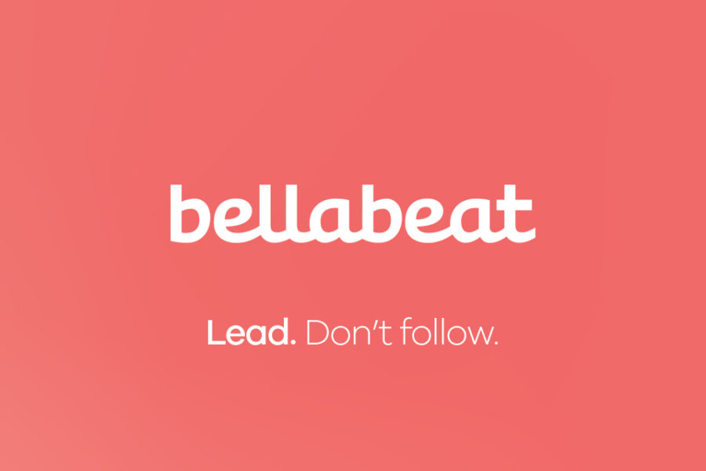
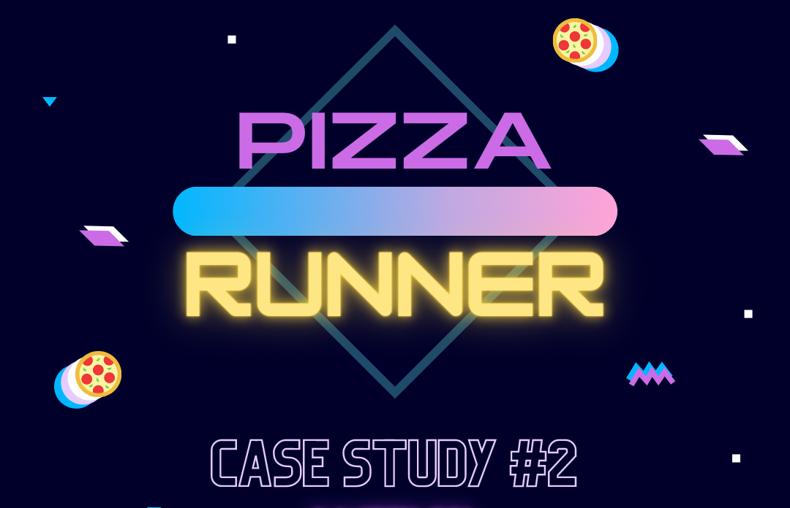
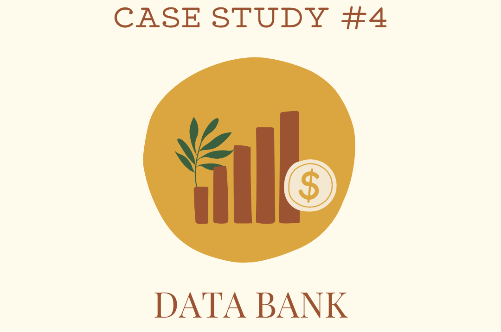

Here, you'll explore a collection of dynamic projects showcasing my expertise as a data analyst.
From case study projects to insightful visualizations, each project is crafted with precision using tools such as R, Python, SQL, Power BI, Tableau, and Excel.
Get ready to dive into a world of data-driven solutions and transformative analytics.


In this case study, I analysed the customer data from Danny's Diner to unveil patterns and insights into purchasing behavior. The aim is to empower Danny with actionable information
to provide personalized services and facilitate strategic business expansion based on a deeper understanding of customer preferences.

In this project, I analyzed sales data from Pens and Printers to uncover trends and insights, guiding the selection of an optimal marketing strategy for a new product launch.

In this case study, the objective is to enhance Bellabeat's marketing strategy and boost sales by analysing data on how individuals use smart devices.
This analysis provided insights into market trends and preferences informing product development and marketing strategies.

This case study aims to optimize Pizza Runner's processes, providing actionable insights for enhanced customer satisfaction and operational efficiency in pizza delivery.
This project aims to conduct a comparative analysis of the suicide rates in different countries, taking into account various socioeconomic factors that may influence them.
Furthermore, it seeks to identify the patterns and trends associated with high suicide rates, as well as the possible causes.

In this casestudy, I analysed data from Data Bank, a digital bank startup, to provide insights on customer transactions and node allocation.
Furthermore, I provided data and insights to run an experiment on differnt hypothesis for data storage allocation to customers.